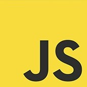
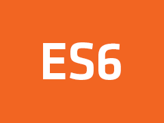

Developer 'Sang jun Park' 의 Javascript의 공부를 위한 개인 블로그입니다.
Javascript의 기본적인 개념을 공부하고 이 곳에 정리하며 실력을 상승시킵니다.
자바스크립트 개발자가 알아야할 핵심컨셉과 그 외의 것들을 공부합니다.
Why create this page?
습득하는 내용을 머릿속으로만 기억하는 것이 아닌 직접 만든 블로그에 기록하고 Log를 남기며
되새기고 다시 볼 수 있겠다는 마음에 블로그를 개설하게 되었습니다.
개인적인 블로그이고, 아직 개발을 시작한지 얼마 되지 않은 초보 개발자이다
보니 내용에 대한 오류도 존재할 수 있으며 미숙한 부분이 있을 수 있고, 완벽하지 않습니다.
어설프게라도 시도하는 것이 좋다 판단하여 시작합니다! 또한, 다른 자바스크립트를 공부하시는 분들에게
조금이나마 도움이 됐으면 좋겠습니다.
이 페이지는 HTML이 프로페셔널하게 시멘틱하지도, CSS의 최적화도, 멋진 인터랙티브한 자바스크립트 기능이
들어가있진 않지만, 직접 부딪혀보는건 좋은 경험이 될 것이라 생각합니다.
Who are you?
저는 현재 한국산업기술대학교 IT경영학과를 재학 중이며, 웹 개발로 진로를 정한 학생입니다.
웹 개발에 흥미를 느껴 2학년 겨울 방학 때부터 개발을 독학 중이며, 현재 자바스크립트를 기반으로
리액트와 Node.js를 중심으로 풀스택 개발자를 꿈꾸는 학생 박상준입니다.
현재의 목표는 javascript를 깊이 이해하여 직접 자기주도적으로 생각하며 적절한 코드를 사용할 수
있는 수준으로 끌어 올리는 것과, 작동방식에 대한 깊은 이해입니다. 단지 이 코드에 이 값을 넣으면
이러한 결과가 나온다가 아닌 어째서 이러한 함수에 이러한 값을 넣으면 이러한 결과가 나오는지에 대한
탐구를 하고자 합니다. '변수는 값이 변하니까 변수야.' 라는 생각 보다는 "변수에 할당된 메모리에 있는
값이 변하는 것인건가? 왜 변수를 재지정하면 값이 변할까?" 를 탐구하고자 합니다.
대학교 생활을 하며 이루고 싶은 것은 리액트를 순조롭게 다룰 수 있는 능력을 키우는 것과, Node.js로
CREATE, READ, UPDATE, DELETE 를 자유롭게 개발할 수 있는 능력을 함양하는 것입니다.
하지만 프레임워크를 잘 다루는 것과 자바스크립트를 잘 이해하고 사용하는 것은 별개라고 생각하기에
이렇게 Vanilla Javascript의 공부를 위한 블로그를 개설하게 되었습니다.